<title>YV Seafloor Compliance 2026</title>
<meta name="claude:viewport-fit-sides" content="cover">
<link rel="stylesheet" href="https://fonts.googleapis.com/css2?family=IBM+Plex+Mono:wght@400;500&family=IBM+Plex+Sans:wght@400;500;600&family=IBM+Plex+Serif:wght@500;600&display=swap">
<style>
/* Layout: single reading column (≈ 70ch) with wide figures and scrollable tables; sober technical report. */
:root {
  --bg: #fbfbf9;
  --surface: #f1f2ef;
  --fg: #16191c;
  --muted: #565c62;
  --rule: #d8dad5;
  --accent: #1d5f8a;
  --flag: #a34a12;
  --ok: #2f6b3a;
  --serif: "IBM Plex Serif", Georgia, "Times New Roman", serif;
  --sans: "IBM Plex Sans", system-ui, -apple-system, "Segoe UI", sans-serif;
  --mono: "IBM Plex Mono", ui-monospace, "SF Mono", Menlo, monospace;
}
@media (prefers-color-scheme: dark) {
  :root:not([data-theme="light"]) {
    --bg: #14171a; --surface: #1d2125; --fg: #e8eaec; --muted: #a6adb4; --rule: #33393f;
    --accent: #7fb6dd; --flag: #e79a62; --ok: #86c793; color-scheme: dark;
  }
}
:root[data-theme="dark"] {
  --bg: #14171a; --surface: #1d2125; --fg: #e8eaec; --muted: #a6adb4; --rule: #33393f;
  --accent: #7fb6dd; --flag: #e79a62; --ok: #86c793; color-scheme: dark;
}
body {
  background: var(--bg); color: var(--fg); font: 400 15.5px/1.6 var(--sans);
  padding-left: max(16px, env(safe-area-inset-left, 0px));
  padding-right: max(16px, env(safe-area-inset-right, 0px));
  padding-block: 32px 64px;
}
main { max-width: 74ch; margin: 0 auto; display: flex; flex-direction: column; gap: 8px; }
h1, h2, h3 { font-family: var(--serif); text-wrap: balance; line-height: 1.25; }
h1 { font-size: 2rem; font-weight: 600; margin: 0; }
h2 { font-size: 1.4rem; font-weight: 600; margin: 36px 0 4px; padding-top: 16px; border-top: 1px solid var(--rule); }
h3 { font-size: 1.08rem; font-weight: 600; margin: 20px 0 0; }
p, ul, ol { margin: 6px 0; }
li { margin: 3px 0; }
a { color: var(--accent); }
a:focus-visible { outline: 2px solid var(--accent); outline-offset: 2px; }
.meta { color: var(--muted); font-size: 0.92rem; }
.eyebrow { font: 500 0.75rem/1 var(--sans); letter-spacing: 0.08em; text-transform: uppercase; color: var(--accent); }
code, .num { font-family: var(--mono); font-size: 0.88em; }
.num { font-variant-numeric: tabular-nums; }
.box { background: var(--surface); border-left: 3px solid var(--accent); padding: 12px 16px; margin: 10px 0; }
.box.flag { border-left-color: var(--flag); }
.box h3 { margin-top: 0; }
.tablewrap { overflow-x: auto; margin: 10px 0; }
table { border-collapse: collapse; font-size: 0.86rem; min-width: 100%; }
th, td { text-align: left; padding: 6px 10px; border-bottom: 1px solid var(--rule); vertical-align: top; }
th { font-weight: 600; color: var(--muted); white-space: nowrap; }
td.n { font-family: var(--mono); font-variant-numeric: tabular-nums; white-space: nowrap; text-align: right; }
th.n { text-align: right; }
.pill { font: 500 0.72rem/1 var(--sans); padding: 3px 7px; border-radius: 999px; border: 1px solid currentColor; white-space: nowrap; }
.pill.flag { color: var(--flag); }
.pill.ok { color: var(--ok); }
figure { margin: 14px 0; }
figure img { width: 100%; height: auto; background: #fff; border: 1px solid var(--rule); }
figcaption { color: var(--muted); font-size: 0.88rem; margin-top: 6px; }
.wide { width: min(1100px, calc(100vw - 32px)); margin-left: 50%; transform: translateX(-50%); }
.grid2 { display: grid; grid-template-columns: repeat(auto-fit, minmax(min(100%, 420px), 1fr)); gap: 14px; }
.grid2 figure { margin: 0; min-width: 0; }
@media (prefers-reduced-motion: reduce) { * { scroll-behavior: auto; } }
</style>

<main>
  <p class="eyebrow">BRUIT-FM · ComPy 2.2 · RHUM-RUM (YV)</p>
  <h1>Seafloor compliance of the YV broadband stations</h1>
  <p class="meta">Mohammad-Amin Aminian (IPGP). Processing and report prepared by Claude, 28 October 2026. Code: ComPy branch <code>claude/compliance-yv</code>. Outputs on the Mac: <code>~/Desktop/BRUIT-FM/compliance_yv_2026-10-28/</code>.</p>

  <div class="box">
    <h3>Summary</h3>
    <ul>
      <li><b>All 8 broadband stations</b> processed through the compliance function: RR28, RR29, RR34, RR36, RR38, RR40, RR50 and RR52. The request named RR32, which is not on the data drive. RR34 is the eighth broadband station of Aminian et al. (2025, Table 1), so it was processed in its place.</li>
      <li><b>ComPy audit:</b> 7 defects fixed and tested (78 tests pass) and 10 science items documented. The largest numerical fix is that the gravity term was multiplied by coherence. Its effect is 0.2–0.7 % at the coherences obtained here and larger at low coherence.</li>
      <li><b>DPG gains:</b> ComPy's own teleseismic calibration reproduces the paper's Table 1 to within ±0.01 at every station. The BRUIT-FM <code>gains.csv</code> gains are 0–6 % higher at five stations.</li>
      <li><b>Independent check:</b> TiSKitPy, run on the same windows, agrees with the ComPy stacked compliance to within 0.2–1.5 % (median).</li>
      <li><b>New finding:</b> the pressure-to-vertical sensitivity ratio changes during the deployment, and the Rayleigh calibration confirms it independently. RR50 steps ×1.68 on 2013-08-04 and RR36 ×1.63 in November 2013. RR38 and RR40 drift by 12–25 % late in 2013. For these four stations the compliance is given for the stable epoch before the change.</li>
    </ul>
  </div>

  <h2>1. Stations and data</h2>
  <p>The data are the RHUM-RUM OBS records (network YV, November 2012 to November 2013): Trillium 240 seismometers and differential pressure gauges recorded at 62.5 Hz. They come from <code>/Volumes/DATA_bruitfm/SDS</code>, with responses from <code>INVENTORIES/YV.xml</code>. Water depths are taken from the StationXML elevations and match the paper. RR34 stops on 2013-06-23.</p>
  <figure>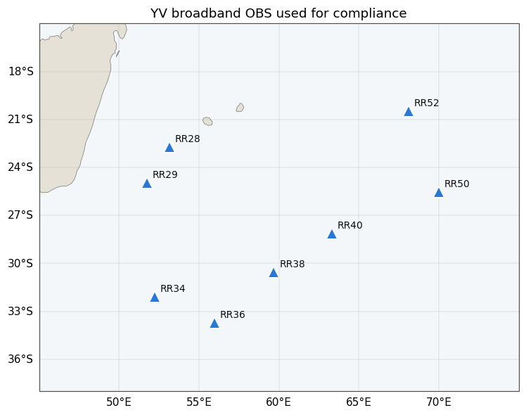<figcaption>Figure 1. Stations used. RR28, RR29 and RR34 are on the Somali Plate; RR36, RR38 and RR40 are on the SWIR; RR50 is at the Rodrigues Triple Junction and RR52 on the CIR.</figcaption></figure>

  <h2>2. Processing chain</h2>
  <p>The chain follows Aminian et al. (2025, Fig. 2 and §4) and is run unattended for every station by scripts A to H.</p>
  <ol>
    <li><b>Decimation and response removal</b> (A). The data are decimated 62.5 → 1.25 Hz with TiSKitPy's SAC FIR filters (factors 5, 5, 2), as in thesis §3.1.1. All channels sit on one 0.8 s grid. Responses are removed after decimation with <code>water_level=None</code> and a pre-filter, giving Z in m and P in Pa. Day files are joined across the OBS clock-correction offsets.</li>
    <li><b>Earthquakes</b> (B). The USGS catalogue for M ≥ 5.85 gives 218 events. Each is excluded for 1.5 days per magnitude unit (Deen et al. 2017; paper §4.1.2), about 23 % of the record. Local events are found with a recursive STA/LTA (60/1800 s) in 0.1–0.5 Hz, about 1 % of the record.</li>
    <li><b>Periodic transients</b> (B). Folding over 3596–3604 s in 15-day blocks found <b>no hourly mass-position glitch</b> above noise in the 1.25-Hz data: fold strength was 1.1–1.3, and the template was below 1 % of the data RMS. The stack-and-subtract step fired only where the seismometer channels were nearly dead (RR38 from 2012-10-30 to 2012-11-28; RR52 from 2013-10-14), on an exact 3600.0 s digital artefact.</li>
    <li><b>Tilt</b> (B). Hourly TiSKitPy <code>CleanRotator</code> angles, about 7,300 hours per station, are median smoothed over 24 h and applied per sample, so the rotation adds no hour-boundary steps.</li>
    <li><b>Coherent noise</b> (B). BH1/BH2-coherent noise is removed from BHZ only, with TiSKitPy <code>DataCleaner</code> in equal windows of at most 24 h, with transfer functions estimated outside the event spans (paper §4.1.4). The pressure channel is not modified.</li>
    <li><b>DPG gain</b> (D). Two sources are used: (a) BRUIT-FM <code>gains.csv</code>, and (b) ComPy's <code>calculate_spectral_ratio</code> with M ≥ 7 events, 0.02–0.06 Hz and squared coherence above 0.97.</li>
    <li><b>Compliance</b> (C). The record is cut into non-overlapping 35-min windows that avoid events (paper §4.2). A window is kept if:
      <ul>
        <li>its median amplitude coherence is at least 0.9; 0.8 would be used only if fewer than 500 windows passed, which never happened;</li>
        <li>its calibrated pressure PSD is 10–50 dB;</li>
        <li>its acceleration PSD is −170 to −150 dB.</li>
      </ul>
      The band is the widest run where the mean coherence of the kept windows reaches the threshold. The estimate is η = k·|S<sub>pz</sub>|/S<sub>pp</sub> from cross-spectra stacked over all kept windows, with the wave-attraction and free-air corrections, and comes with the Bendat &amp; Piersol error and the window scatter.</li>
    <li><b>Checks</b> (F to H). They cover: TiSKitPy's own estimate on the same windows; monthly stacks; per-window time series and step detection; and the 2.1 versus 2.2 legacy estimator.</li>
  </ol>

  <h2>3. ComPy audit and fixes</h2>
  <p>The audit compared the code with the GJI paper and the thesis, Crawford (1994 thesis, 2004), Crawford &amp; Webb (2002), Zha (2014 thesis and the EPR paper), OBStools <code>comply</code>, ATaCR and TiSKitPy. The full record is in <code>docs/AUDIT_2026-10.md</code> on the branch.</p>
  <div class="tablewrap"><table>
    <tr><th>#</th><th>Defect (fixed, with tests)</th><th>Effect</th></tr>
    <tr><td>D1</td><td>The wave-attraction term a<sub>w</sub>/p was multiplied by coherence in <code>estimate</code>.</td><td>Compliance biased low by (1−γ)·a<sub>w</sub>/p. Here 0.2–0.7 % (the gravity term is 5–11 % of η); it grows at lower coherence.</td></tr>
    <tr><td>D2</td><td>The Bendat &amp; Piersol error used the first selected window only.</td><td>The error described one window. It now covers all windows, with overlap counted once.</td></tr>
    <tr><td>D3</td><td><code>Rotate</code> ran an hourly <code>DataCleaner</code> on the whole stream.</td><td>It also removed horizontal-coherent energy from <b>BDH</b>, from transfer functions with only 3–7 averages. New <code>remove_coherent_noise</code> cleans Z only, over 12–24 h.</td></tr>
    <tr><td>D4</td><td>Response removal used obspy's default 60 dB water level.</td><td>Removing a displacement response at 62.5 Hz then gives a <b>22 dB</b> error in 0.004–0.1 Hz (measured on RR52). Now <code>water_level=None</code> with a pre-filter.</td></tr>
    <tr><td>D5</td><td>The gravity term used g = 9.8 while the dispersion solver used 9.79329.</td><td>A consistency problem only; physical constants are now named and shared.</td></tr>
    <tr><td>D6</td><td>The gravity test compared values of order 4e-11 with an absolute tolerance of 1e-8.</td><td>It always passed. Strict formula and sign tests replace it.</td></tr>
    <tr><td>D7</td><td>Calibration returned no spread, and ρ was a literal.</td><td>Per-event gains and their σ are now returned, and the water density is a named parameter.</td></tr>
  </table></div>
  <p>The science items keep their old defaults and gain new options:</p>
  <ul>
    <li><b>S1, gates:</b> the legacy main-mode gates suit RR52 only and use uncalibrated pressure. The published gates are now a <code>GJI2025</code> preset.</li>
    <li><b>S2, windows:</b> legacy windows overlap by more than 98 %, so their scatter is not an uncertainty.</li>
    <li><b>S3, estimator:</b> per-window ratios are averaged; the new estimator stacks cross-spectra instead.</li>
    <li><b>S4, rotation:</b> hourly rotation steps are replaced by a smooth rotation.</li>
    <li><b>S5, coherent noise:</b> paper eq. 10 and thesis eq. 3.5 write the removal in the PSD domain, but the code correctly uses complex transfer functions.</li>
    <li><b>S6, gravity term:</b> thesis eq. 3.13 keeps the stray 2π of Crawford et al. (1998); the code is correct. The gravity sign was also checked: wave attraction opposes loading (Zha 2014), so the correction raises |η|.</li>
    <li><b>S7, RR36 band:</b> it differs between thesis Table 3.1 and paper Table 1.</li>
    <li><b>S8, Rayleigh window:</b> it is picked at max |Z|, and ρ = 1028 is used where the in-situ column mean is about 1035–1045, about +1 % on g.</li>
    <li><b>S9, error after selection:</b> after coherence selection the Bendat &amp; Piersol error is optimistic.</li>
    <li><b>S10, transients:</b> example 1 needs interactive transient picking; an unattended detector was added.</li>
  </ul>
  <p>A before/after comparison of the legacy beta estimator (2.1 vs 2.2) on the cleaned RR52 year was not informative. The historical beta gates accepted only 2 of the 2-h windows, and at γ ≈ 1 fix D1 changes compliance by less than 0.02 %. The D1 bias quoted above is evaluated for each station at its real coherence.</p>

  <h2>4. Pressure-gauge gains</h2>
  <figure>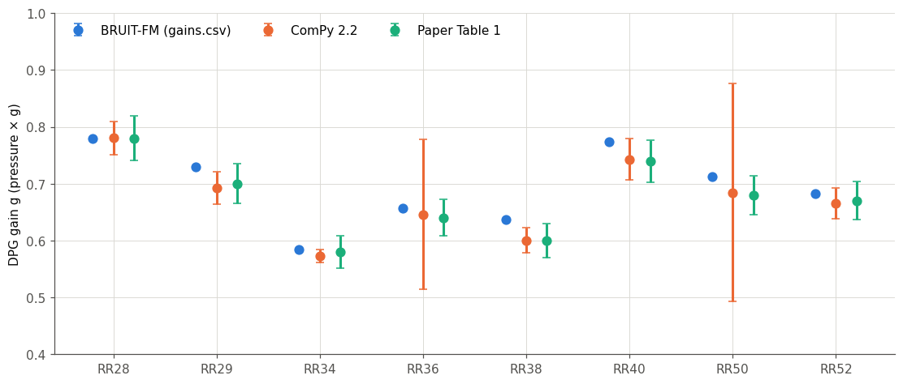<figcaption>Figure 2. Gain g (pressure × g). ComPy error bars are the per-event standard deviation; paper error bars are ±5 %. RR36 and RR50 have large per-event scatter because of the late-deployment sensitivity changes (section 6).</figcaption></figure>
  <div class="tablewrap"><table>
    <tr><th>Station</th><th class="n">Depth [m]</th><th class="n">gains.csv</th><th class="n">ComPy 2.2</th><th class="n">σ (events)</th><th class="n">Events</th><th class="n">Paper</th></tr>
    <tr><td>RR28</td><td class="n">4550</td><td class="n">0.779</td><td class="n">0.780</td><td class="n">0.030</td><td class="n">16</td><td class="n">0.78</td></tr>
    <tr><td>RR29</td><td class="n">4829</td><td class="n">0.730</td><td class="n">0.693</td><td class="n">0.029</td><td class="n">17</td><td class="n">0.70</td></tr>
    <tr><td>RR34</td><td class="n">4265</td><td class="n">0.585</td><td class="n">0.573</td><td class="n">0.012</td><td class="n">9</td><td class="n">0.58</td></tr>
    <tr><td>RR36</td><td class="n">3560</td><td class="n">0.658</td><td class="n">0.646</td><td class="n">0.132</td><td class="n">12</td><td class="n">0.64</td></tr>
    <tr><td>RR38</td><td class="n">4560</td><td class="n">0.636</td><td class="n">0.601</td><td class="n">0.022</td><td class="n">14</td><td class="n">0.60</td></tr>
    <tr><td>RR40</td><td class="n">4780</td><td class="n">0.774</td><td class="n">0.743</td><td class="n">0.036</td><td class="n">15</td><td class="n">0.74</td></tr>
    <tr><td>RR50</td><td class="n">4118</td><td class="n">0.712</td><td class="n">0.684</td><td class="n">0.191</td><td class="n">16</td><td class="n">0.68</td></tr>
    <tr><td>RR52</td><td class="n">2918</td><td class="n">0.682</td><td class="n">0.666</td><td class="n">0.028</td><td class="n">10</td><td class="n">0.67</td></tr>
  </table></div>
  <p>The <code>gains.csv</code> values each rest on 3 events, under an assumed sign. They are 3–6 % above the ComPy and paper values at RR29, RR38, RR40 and RR50. Because compliance scales as 1/g, choosing between the two gain sets moves η by up to 6 %.</p>

  <h2>5. Compliance results</h2>
  <div class="tablewrap"><table>
    <tr><th>Station</th><th>Epoch</th><th class="n">Windows</th><th>Band [Hz]</th><th>Paper band</th><th class="n">η(0.01 Hz) gains.csv</th><th class="n">η(0.01 Hz) ComPy g</th><th class="n">Window σ</th><th class="n">Monthly spread</th><th class="n">TiSKitPy / ComPy</th></tr>
    <tr><td>RR28</td><td>full</td><td class="n">2957</td><td class="num">0.0073–0.0134</td><td class="num">0.0066–0.0162</td><td class="n">4.60</td><td class="n">4.60</td><td class="n">15 %</td><td class="n">2.6 %</td><td class="n">1.003</td></tr>
    <tr><td>RR29</td><td>full</td><td class="n">3747</td><td class="num">0.0073–0.0122</td><td class="num">0.0061–0.0147</td><td class="n">2.24</td><td class="n">2.37</td><td class="n">16 %</td><td class="n">2.2 %</td><td class="n">1.015</td></tr>
    <tr><td>RR34</td><td>full</td><td class="n">1367</td><td class="num">0.0073–0.0134</td><td class="num">0.0071–0.0152</td><td class="n">4.19</td><td class="n">4.27</td><td class="n">16 %</td><td class="n">1.2 %</td><td class="n">1.008</td></tr>
    <tr><td>RR36</td><td>to 2013-10-01</td><td class="n">4421</td><td class="num">0.0073–0.0159</td><td class="num">0.0076–0.0188</td><td class="n">3.25</td><td class="n">3.31</td><td class="n">13 %</td><td class="n">2.2 %</td><td class="n">1.008</td></tr>
    <tr><td>RR38</td><td>to 2013-10-01</td><td class="n">1800</td><td class="num">0.0085–0.0146</td><td class="num">0.0066–0.0162</td><td class="n">2.40</td><td class="n">2.55</td><td class="n">28 %</td><td class="n">8.4 %</td><td class="n">0.998</td></tr>
    <tr><td>RR40</td><td>to 2013-10-01</td><td class="n">2373</td><td class="num">0.0085–0.0134</td><td class="num">0.0081–0.0157</td><td class="n">2.98</td><td class="n">3.11</td><td class="n">18 %</td><td class="n">1.7 %</td><td class="n">1.011</td></tr>
    <tr><td>RR50</td><td>to 2013-08-01</td><td class="n">2017</td><td class="num">0.0073–0.0134</td><td class="num">0.0071–0.0152</td><td class="n">1.99</td><td class="n">2.07</td><td class="n">15 %</td><td class="n">2.9 %</td><td class="n">1.015</td></tr>
    <tr><td>RR52</td><td>full</td><td class="n">3366</td><td class="num">0.0073–0.0171</td><td class="num">0.0071–0.0193</td><td class="n">2.26</td><td class="n">2.32</td><td class="n">13 %</td><td class="n">2.0 %</td><td class="n">1.010</td></tr>
  </table></div>
  <p class="meta">η values are in 10<sup>−11</sup> Pa<sup>−1</sup>. Window σ is the median standard deviation of single-window curves relative to η. Monthly spread is the standard deviation of monthly stacks relative to η. The formal Bendat &amp; Piersol error of the stack is only 0.2–0.4 %, because each stack holds about 5,000–15,000 averages. The realistic uncertainty of η is therefore set by the gain (±3–5 %) and by the temporal stability (2–3 %; 8 % at RR38). The bands are narrower than the paper's because the threshold is 0.9 at every station, where the paper used 0.8 at the poorer stations.</p>
  <figure class="wide">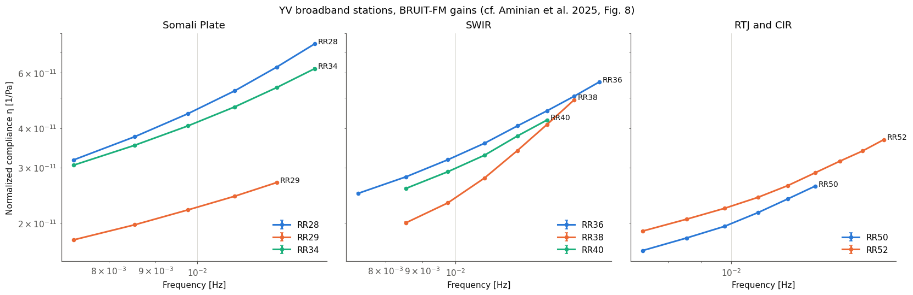<figcaption>Figure 3. Normalized compliance by tectonic setting, using the <code>gains.csv</code> gains (stable epochs where defined). Error bars (Bendat &amp; Piersol) are smaller than the markers.</figcaption></figure>
  <h3>Per-station panels</h3>
  <p>Each panel shows four things: the acceleration PSD and calibrated pressure PSD of a random 300 of the accepted windows; the coherence with its threshold and band; and the compliance for both gains, with ±1σ window scatter shaded and the paper band dashed.</p>
  <div class="grid2 wide">
    <figure>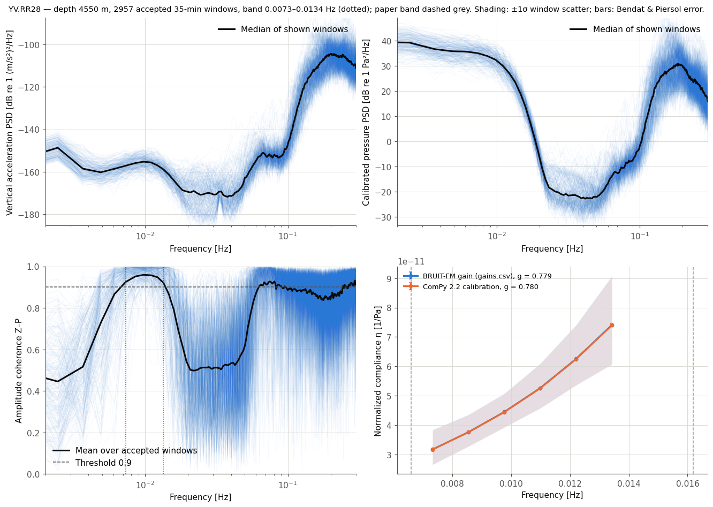<figcaption>RR28</figcaption></figure>
    <figure>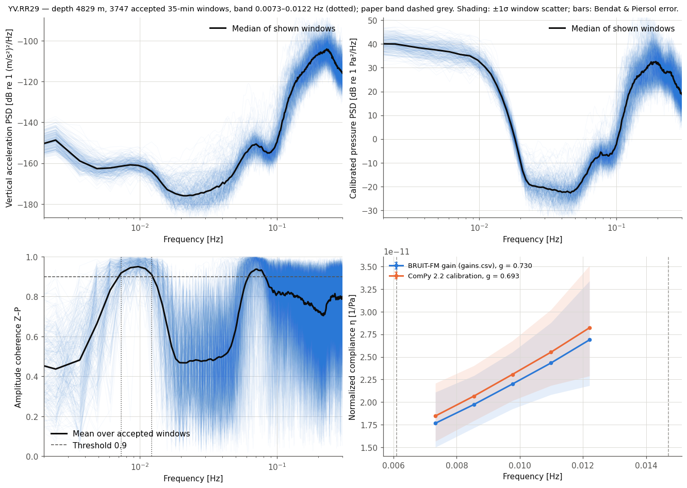<figcaption>RR29</figcaption></figure>
    <figure>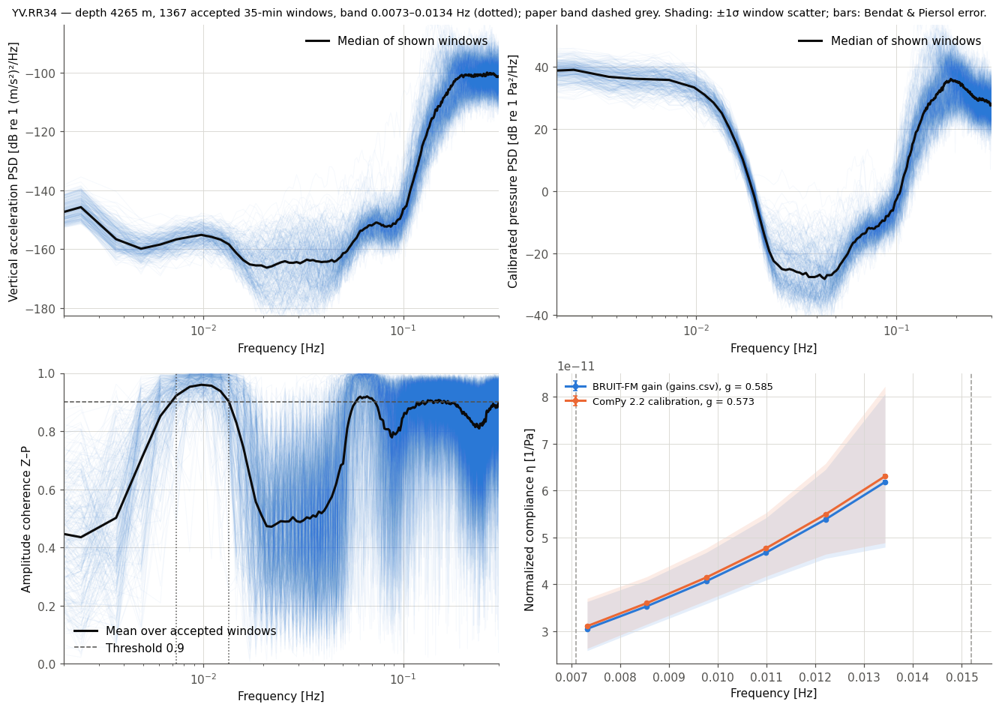<figcaption>RR34</figcaption></figure>
    <figure>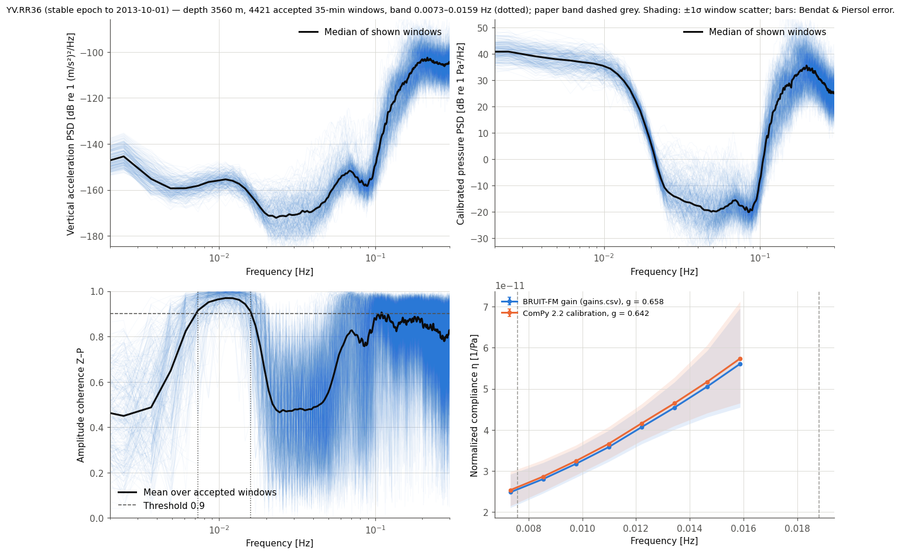<figcaption>RR36 (stable epoch)</figcaption></figure>
    <figure>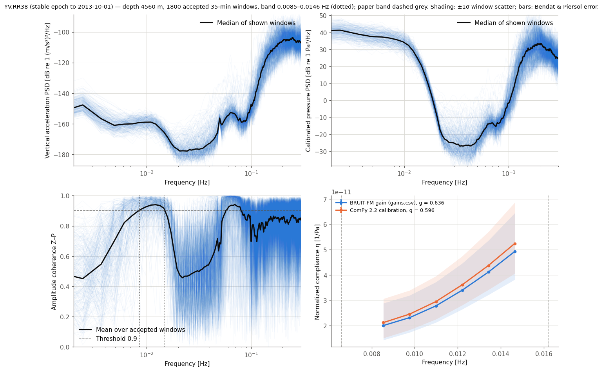<figcaption>RR38 (stable epoch)</figcaption></figure>
    <figure>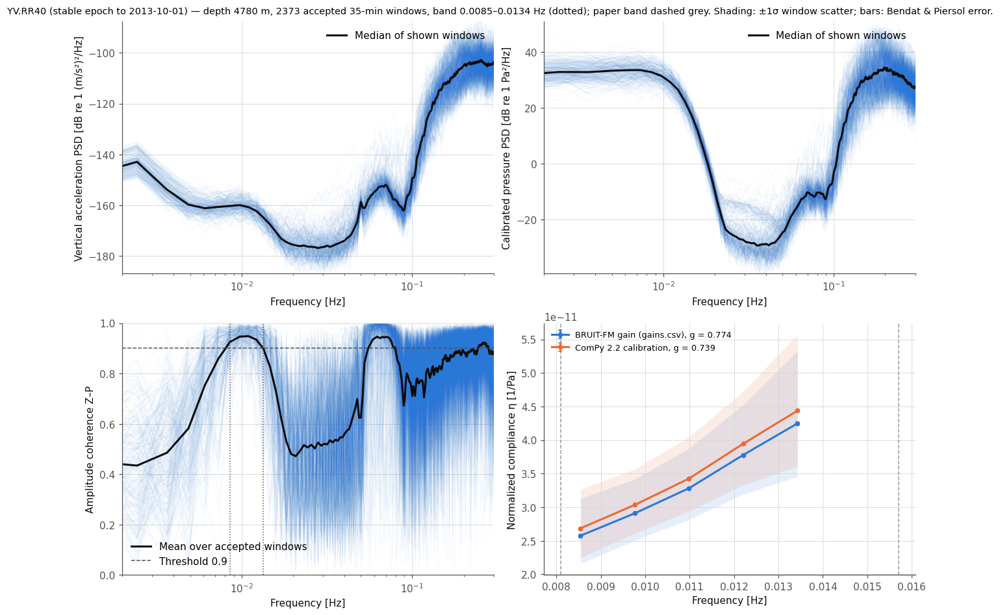<figcaption>RR40 (stable epoch)</figcaption></figure>
    <figure>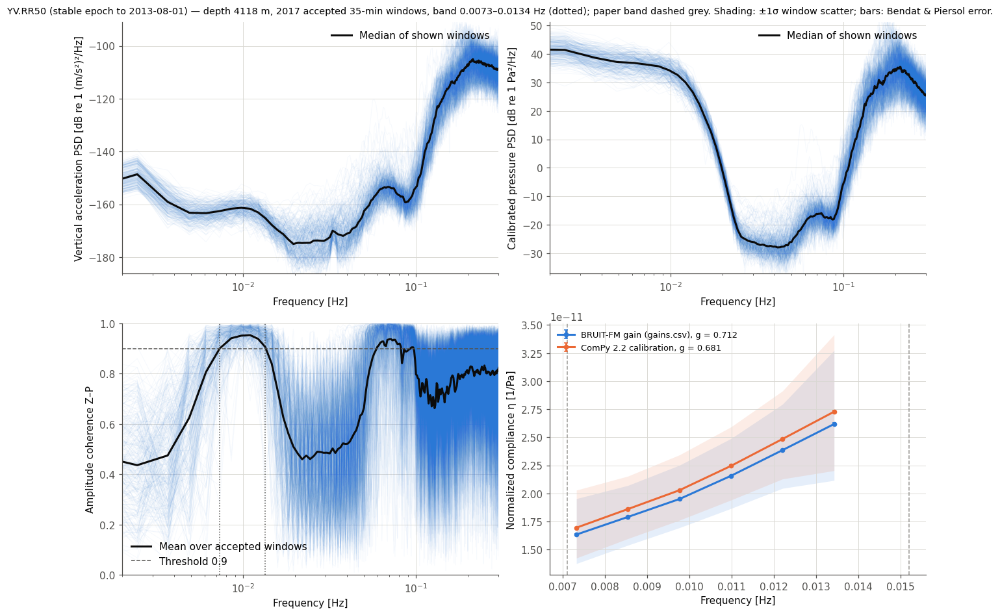<figcaption>RR50 (stable epoch)</figcaption></figure>
    <figure>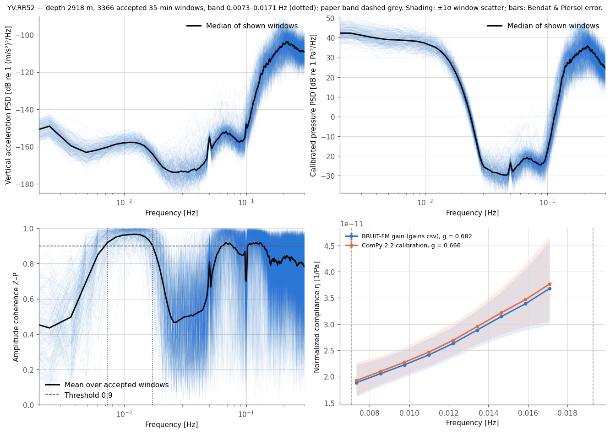<figcaption>RR52</figcaption></figure>
  </div>

  <h2>6. Temporal stability and sensitivity changes</h2>
  <figure class="wide">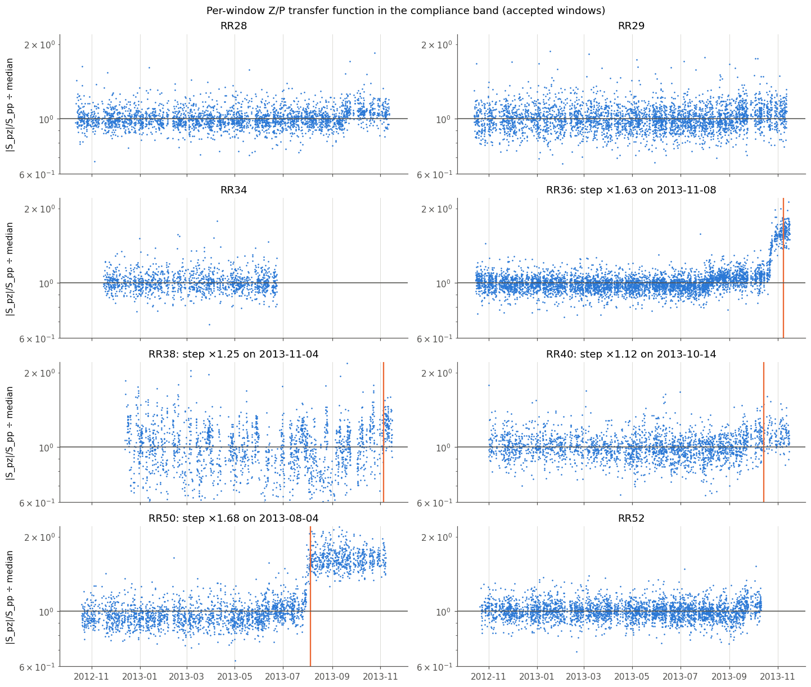<figcaption>Figure 4. Band median of |S<sub>pz</sub>|/S<sub>pp</sub> for every accepted window, normalized by its median. Orange lines mark steps larger than about 10 %.</figcaption></figure>
  <div class="tablewrap"><table>
    <tr><th>Station</th><th>Largest change</th><th class="n">Factor</th><th class="n">Rayleigh g before</th><th class="n">after (events)</th><th>Treatment</th></tr>
    <tr><td>RR50</td><td>2013-08-04</td><td class="n">×1.68</td><td class="n">0.681</td><td class="n">1.161 (3)</td><td><span class="pill flag">epoch to 2013-08-01</span></td></tr>
    <tr><td>RR36</td><td>2013-11-08 (rise from Sep)</td><td class="n">×1.63</td><td class="n">0.643</td><td class="n">1.097 (1)</td><td><span class="pill flag">epoch to 2013-10-01</span></td></tr>
    <tr><td>RR38</td><td>2013-11-04</td><td class="n">×1.25</td><td class="n">0.597</td><td class="n">0.638 (1)</td><td><span class="pill flag">epoch to 2013-10-01</span></td></tr>
    <tr><td>RR40</td><td>2013-10-14</td><td class="n">×1.12</td><td class="n">0.739</td><td class="n">0.786 (2)</td><td><span class="pill flag">epoch to 2013-10-01</span></td></tr>
    <tr><td>RR28</td><td>2013-09-17</td><td class="n">×1.08</td><td class="n">0.778</td><td class="n">0.839 (3)</td><td><span class="pill ok">full period</span></td></tr>
    <tr><td>RR29</td><td>2013-10-22</td><td class="n">×1.06</td><td class="n">0.690</td><td class="n">0.733 (1)</td><td><span class="pill ok">full period</span></td></tr>
    <tr><td>RR52</td><td>2013-09-20</td><td class="n">×1.07</td><td class="n">0.660</td><td class="n">0.716 (1)</td><td><span class="pill ok">full period</span></td></tr>
    <tr><td>RR34</td><td>none (ends June 2013)</td><td class="n">×0.99</td><td class="n">–</td><td class="n">0.574 (9)</td><td><span class="pill ok">full period</span></td></tr>
  </table></div>
  <p>Two independent methods see the same change in sensitivity ratio. These are the compliance transfer function from infragravity waves at 0.007–0.017 Hz, and the P/a ratio of teleseismic Rayleigh waves at 0.02–0.06 Hz. The cause is therefore instrumental, not geological. At RR50 the vertical PSD level jumps by about 6 dB while the pressure level does not. At RR36 the pressure level falls by about 2.6 dB. Most stations show a 6–8 % rise late in 2013, which is consistent with a slow loss of DPG sensitivity. The stable-epoch results bring the monthly spread down to 1–3 % at RR36, RR40 and RR50.</p>
  <div class="grid2">
    <figure>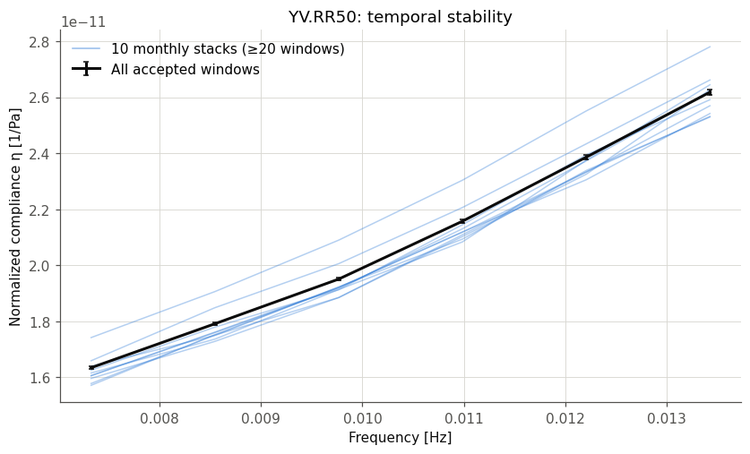<figcaption>RR50, full period: two families of monthly curves, before and after August 2013.</figcaption></figure>
    <figure>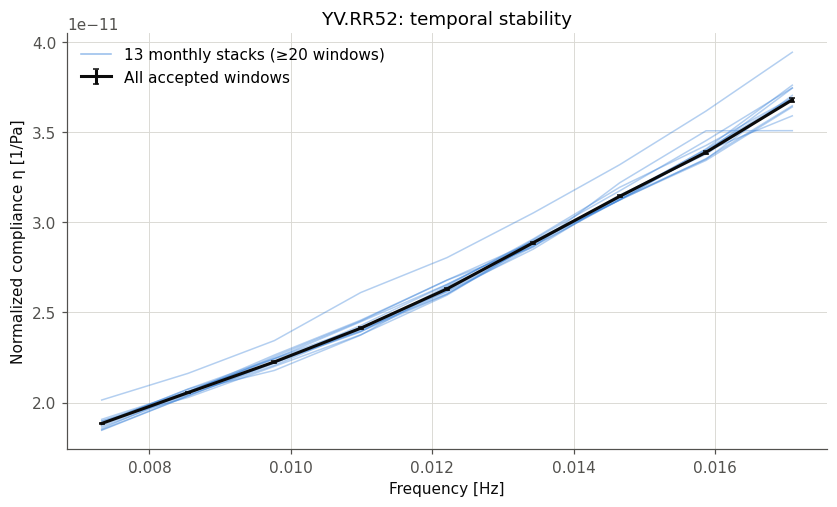<figcaption>RR52: stable over 13 months, supporting the paper's stability claim.</figcaption></figure>
  </div>
  <figure>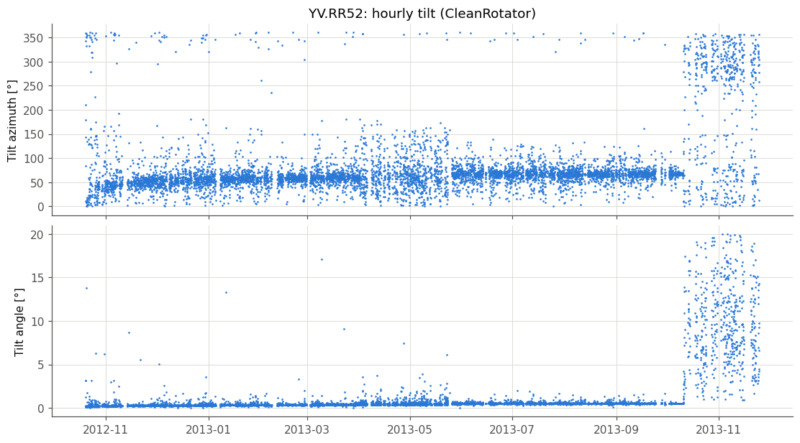<figcaption>Figure 5. RR52 hourly tilt from CleanRotator; compare paper Fig. 4.</figcaption></figure>

  <h2>7. Open issues and decisions for you</h2>
  <div class="box flag">
    <ul>
      <li><b>Sensitivity changes</b> at RR50 (×1.68 on 2013-08-04) and RR36 (×1.63 in Nov 2013), with smaller ones at RR38 and RR40. The question for Wayne is whether these are known instrument events (gauge or seismometer). The stable epoch is my choice; the full-period results are also saved.</li>
      <li><b>Polarity:</b> the Z/P phase is 3–16° at every station, where 180° is expected for downward displacement under positive pressure. This matches the inverted BDH sign that BRUIT-FM found for YV (<code>rayleigh_sign = −1</code>). Compliance magnitudes are unaffected, but the metadata sign needs a decision.</li>
      <li><b>Dead seismometer intervals</b> carrying an exact 3600 s artefact: RR38 2012-10-30 to 11-28 and RR52 from 2013-10-14. The quality gates reject these windows.</li>
      <li><b>Which gain to carry forward:</b> ComPy and the paper agree within ±0.01; <code>gains.csv</code> is up to 6 % higher on 3 events.</li>
      <li><b>Coherence threshold:</b> 0.9 everywhere narrows the bands relative to the paper. Rerunning with 0.8 for wider bands is one command (<code>THRESHOLDS</code> in <code>c_compliance.py</code>).</li>
      <li><b>RR32 → RR34 substitution</b>: please confirm.</li>
      <li>Nothing was applied to BRUIT-FM results, no frozen result was overwritten, and no one outside was contacted.</li>
    </ul>
  </div>

  <h2>8. Files and reproduction</h2>
  <ul>
    <li><b>Results:</b> <code>results/&lt;STA&gt;/</code> holds CSV and NPZ files of compliance, uncertainty, coherence, phase, window mean and std, and stacked spectra, for both gains. Stable epochs are under <code>results/&lt;STA&gt;/epoch/</code>. Tables are in <code>results/tables/</code>.</li>
    <li><b>Figures:</b> <code>figures/</code>. <b>Logs:</b> <code>logs/</code>. Intermediate data (11 GB, not in Git) are in <code>work/</code>.</li>
    <li><b>Scripts</b> in <code>scripts/</code>:
      <ul>
        <li><code>a_preprocess.py</code> → <code>b_clean.py</code> → <code>d_calibrate.py</code> → <code>c_compliance.py [--end]</code>;</li>
        <li><code>e_figures.py</code>, <code>g_tiskit_check.py</code>, <code>h_stability.py</code>, <code>f_legacy_compare.py</code>.</li>
      </ul>
      The whole run takes about 1.5 h on the M5 Pro.</li>
    <li><b>Code:</b> ComPy branch <code>claude/compliance-yv</code> (draft PR, not merged), version 2.2.0.</li>
    <li><b>Literature read:</b> Aminian et al. 2025 (GJI); Aminian 2024 thesis (HAL tel-05393939); Crawford 1994 thesis and 2004 (GJI); Crawford &amp; Webb 2002 (EPSL); Hulme et al. 2005; Zha 2014 thesis and Zha et al. 2014 (JGR); Webb 1998. Crawford et al. 1991 and 1998 were not downloadable (server 403); their gravity-term content was checked through the Crawford and Zha theses.</li>
  </ul>
</main>
